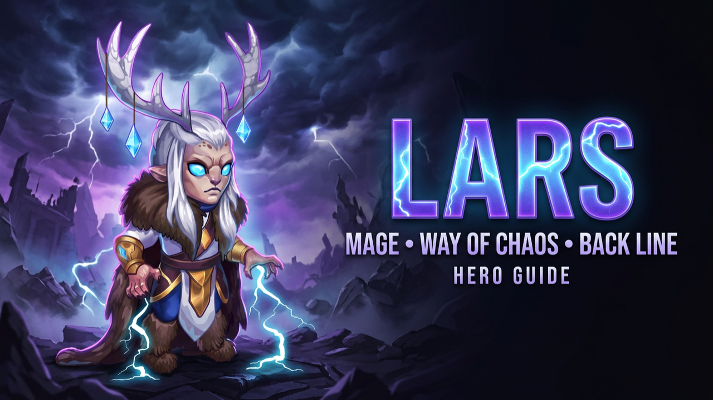

LARS
Lars is a powerful battlefield controller capable of repositioning enemy teams, applying Marks of Water and creating devastating opportunities for his allies. His storms can completely change where a battle takes place.
GROUP. MARK. CONTROL.
Lord of the Storm pulls nearby enemies toward the center of the enemy backline while applying Marks of Water. Lars then uses those Marks to strengthen his damage and control, turning enemy positioning into one of his greatest weapons.
SKILLS
Lord of the Storm
Lars summons a storm on the enemy backline, pulling nearby enemies into its center. The storm deals Magic Damage when it appears and again when it disappears. Every enemy caught inside receives a Mark of Water. The ability scales with Lars' Magic Attack.
Chain Lightning
Lars releases an electrical charge that jumps from one enemy to another, damaging every target it touches. The ability scales with Magic Attack and spreads pressure across the enemy team.
Lightning Bolt
Lars strikes the nearest enemy with a powerful bolt, dealing Magic Damage and stunning the target for four seconds. Enemies carrying a Mark of Water are always prioritized.
Conductance
Whenever Lars attacks an enemy carrying a Mark of Water, he deals additional damage while also extending the duration of his stuns. Marks therefore increase both his damage and his control potential.
KEY SYNERGIES
KRISTA
When Krista places Frozen Needles before Lars activates Lord of the Storm, enemies can be dragged across the frozen battlefield and receive additional damage from the ice spikes.
JORGEN
Once Lars groups enemies together, Jorgen can use Torment of Powerlessness to disrupt Energy generation across the grouped formation.
ARACHNE
Lars can group enemies into a concentrated area, creating opportunities for Arachne to paralyze multiple targets at once.
JUDGE & POLARIS
Judge can continue chaining control with Ion Cyclone, while Polaris can extend disruption with Pulsing Comet, creating additional crowd-control pressure.
SKINS
Highest priority. Magic Attack directly improves Lord of the Storm, Chain Lightning and Lightning Bolt.
Helps Lars bypass enemy Magic Defense and maintain offensive pressure against tougher teams.
Gives Lars additional survivability and more time to activate further Ultimates.
Further increases the scaling of Lars' offensive abilities.
Intelligence increases both Magic Attack and Magic Defense.
Provides protection against physical teams but is the final priority in this build.
Future skins: another Health or Magic Penetration Skin would become one of the highest priorities for Lars according to this build.
GLYPHS
Allows Lars to bypass defensive heroes and maximize the effectiveness of his Magic Damage.
Adds survivability against assassins, splash damage and dive compositions.
Directly increases the damage of Lord of the Storm, Chain Lightning and Lightning Bolt.
Provides additional protection against heavy magical teams.
Increases Magic Attack and Magic Defense, but the direct offensive stats take priority earlier.
Progression: raise all Glyphs to around Level 40 before pushing them further unless you are specifically chasing Hero Classes.
ARTIFACTS
BOOK
Provides Magic Attack and Magic Penetration, increasing both Lars' raw spell damage and his ability to bypass enemy Magic Defense.
RING
Provides Intelligence, strengthening Lars' offensive scaling and magical durability.
WEAPON
Grants the entire team Magic Penetration whenever Lars casts his Ultimate. It is particularly valuable in magic-based compositions.
GIFT OF THE ELEMENTS
MAX IT OUT
Lars depends heavily on his base stats to perform consistently. Intelligence and Magic Attack increase his damage while also helping him remain effective throughout longer battles.
TALISMANS
Premium Option
The premium VIP Talisman. It is harder to obtain but provides the stronger long-term investment thanks to its Intelligence scaling.
Standard Option
A considerably easier option for most players to build. A properly upgraded Lars using this Talisman remains an extremely dangerous hero.
LARS COUNTERS
DORIAN
If Lars pulls your team into Dorian's Vampirism Aura, the affected heroes gain Lifesteal and can significantly improve their survivability.
JHU
If Lars is the furthest hero on the battlefield, Jhu can jump directly onto him and pressure him before his control becomes established.
JORGEN
Energy control can prevent Lars from activating Lord of the Storm as frequently and delay his rotation.
RUFUS
His protection against lethal Magic Damage makes it difficult for Lars to create meaningful magical pressure.
CORNELIUS
Heavy Wisdom can threaten Lars due to his high Intelligence, while Protective Dome increases the team's Magic Defense.
IRIS
Marks of Water can activate Mysterious Pact, reducing Lars' Physical and Magic Attack as the fight continues.
PHOBOS
Can steal Energy from the highest Magic Attack enemy, stun that target with Paralysis and burn additional Energy with Mage's Terror.
THE LORD OF STORMS CONTROLS WHERE THE BATTLE HAPPENS.
Lars combines Magic Damage, enemy repositioning, Marks of Water and extended crowd control. His interactions with heroes such as Krista, Judge and Polaris allow him to create opportunities that few other mages can reproduce. He is not simply a damage dealer — his greatest strength is controlling the battlefield itself.